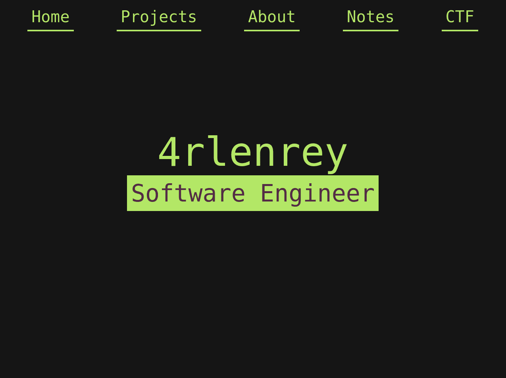

| Preview |
Name |
Description |
Technology used |
 |
JumpHigh |
Small open-source game inspired by "Icy Tower".
It was made by me and my friend. Our goal was to play around with c++
and do something cool.
You can access it on this Github repository
|
C++, SFML, Make |
 |
CtyproAsci |
Small open-source program designed to help me when I need
to convert some text. Inspiration for me was
This website.
You can access it on this Github repository
|
C++, Qt5, CMake |
|
EquationSolver |
Program that can draw some simple equations that you can input.
You can access it on this Github repository
|
C++, SFML, CMake |
|  |
4rlenrey's website |
It's this website you are on right now.
You can check its source code on this Github repository
|
HTML, CSS, JavaScript |